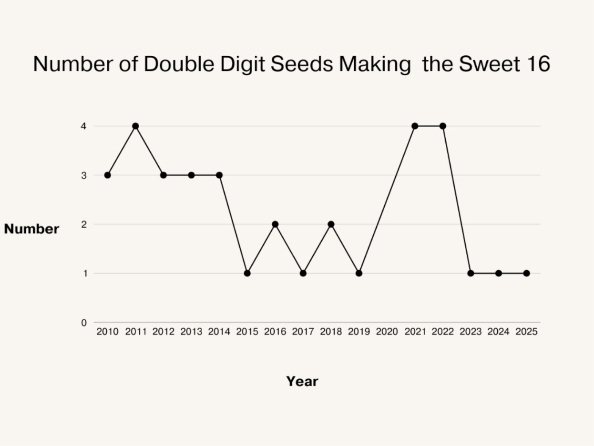
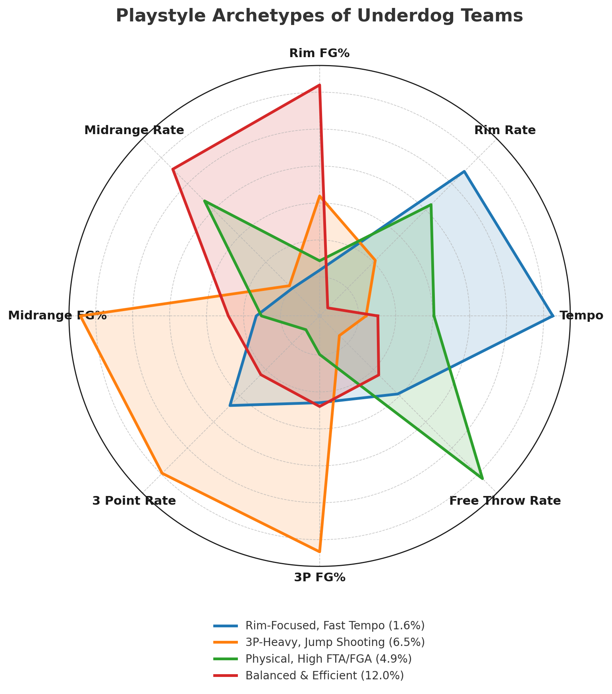

The Art of the Underdog: Analyzing the Key Characteristics of March Madness Cinderellas
By Alex Toohey | May 22, 2025

Introduction
March Madness is a special time of the year. The annual 68 team, single elimination NCAAM College Basketball Tournament is like nothing else in sports. It features true David vs Goliath matchups, as small, little-known schools get the opportunity to compete against blue bloods, and make a name for themselves by beating all odds to pull off legendary upsets under the brightest of lights. These Cinderella runs are highly anticipated every year, as most fans love a good underdog story, and rally behind these underdog teams that take the tournament by storm and attempt to do the impossible. Although these Cinderella runs can often seem impossible to predict, in this article I will attempt to do exactly that. By analyzing NCAAM data from the past ten years (2015 - 2025), I will determine what archetypes of underdog teams have been most successful in making these Cinderella runs, in an effort to uncover a method to the madness.
Before diving into the analysis, it is important to define what makes a team an underdog in the NCAA Tournament and how many games an underdog team must win in the tournament to become a Cinderella. In this article, I decided to keep things simple by labeling any double digit seed in the tournament as an underdog, and deeming any underdog that made at least the Sweet 16 to be a Cinderella, and any underdog that didn’t a non-Cinderella. In addition, throughout this article I will sometimes make the distinction between “mid-major” and “high-major teams”, or “at large” and “automatic” bids. I am referring to high-major teams as those in the Power 5 conferences, namely the SEC, ACC, Big 10, Big East, and Big 12, as these are usually the most competitive in college basketball, and referring to mid-major teams as any team not in one of those Power 5 conferences for simplicity. Furthermore, in the NCAA Tournament there are 37 at large bids given, the only way in for teams that didn’t win their conference tournament, and these are typically given to more high-major teams. There tend to be many competitive teams in these Power 5 conferences that dominate mid-majors but aren’t good enough to win their conference tournament, so they are usually given 11 seeds or better. On the other hand, there are 31 automatic bids given to teams who win their conference tournaments, so 26 of these conference tournament winners are therefore mid- majors from often less competitive conferences, and these teams usually make up most of the 12-16 seeds.
Cinderellas Over Time
With these thresholds in mind, it is helpful to first see how many underdogs have made Cinderella runs in recent years, which is visualized in the line graph below.
As we can see, the number of Cinderellas has jumped around a lot in recent years, but it is interesting to note that there has only been one Cinderella in the Sweet 16 in each of the past three years. This could reflect how the NCAA landscape is changing as a result of NIL (“Name, Image, and Likeness”) being introduced to college basketball in 2021, which allows student-athletes the right to profit off their personal brand through endorsements, social media, and other commercial activities. NIL has some drawbacks, as the top players are now even more highly incentivized to commit or transfer to the top schools who can offer the most lucrative NIL deals. This had led to a more top-heavy league than ever before, as reflected in one of the most “chalky” tournaments of all time in 2025 with all four one seeds making the Final 4. As NIL exacerbates the talent gap between the top schools and the rest of the field, many of these lesser known underdog schools are not able to compete with the behemoths of college basketball, likely contributing to the lower number of Cinderellas we have seen in recent years.
Analysis of Key Characteristics in Cinderella vs non-Cinderella Underdog Teams
Nonetheless, I believe that it is now more important than ever to identify what characteristics and archetypes of underdog tournament teams are most indicative of Cinderella runs, to see what types of underdogs might still be able to hold their own and compete in this NIL-driven future. To conduct my analysis, I compiled advanced team statistics from sites like Kenpom, Hoop-Math, and Bart Torvik from 2015-2025, in order to compare metrics between Cinderella and non-Cinderella teams from these years to see if any distinct differences stood out. To start, I made a grouped bar graph displayed below to compare these two categories of teams across a wide range of statistical categories.
Although as expected most of the statistical differences between Cinderella and non-Cinderella teams aren’t too significant, there are still some noticeable differences to point out. For example, Cinderella teams appear to have almost double the Net Rating (aka Adjusted Efficiency Margin) of non-Cinderella teams, an advanced Kenpom metric that takes both Offensive and Defensive Rating into account, while also being adjusted for strength of schedule, to represent the number of points a team is expected to outscore an average team by. It is also important to note the similarities between these teams, as some of them are surprising. For instance, Cinderella teams appear to have nearly identical or even slightly worse shooting statistics from 3 point range, in transition and at the rim, areas where one might expect successful underdog teams to excel. This indicates these Cinderella teams' advantages must come from other facets of the game. Below is a butterfly chart that more clearly displays key statistical differences between Cinderella and non-Cinderella teams.
Understandably, a tough strength of schedule is one of the key traits that separate most successful versus unsuccessful underdog teams. This is indicative of the fact that many of these Cinderellas by my definition are actually high-major teams, who play very tough conference schedules throughout the year that prepare them well for the strong teams they will have to play in March. It is also likely that mid-major teams who play tougher non-conference schedules are also more prepared and more likely to succeed against strong competition in the tournament, but I will delve further into the differences between these high-major and mid-major Cinderellas later on. In addition, a significantly lower Defensive Rating, which is also an adjusted Kenpom metric that measures how many points a team allows per 100 possessions (meaning a lower Defensive Rating is better), is another distinguishing characteristic that sets Cinderella teams apart from their non-Cinderella underdog counterparts. The common “Defense Wins Championships” cliché appears to hold true here as well, at least in terms of being a crucial component of underdogs being successful in March, even more so than many offensive shooting statistics.
Surprisingly, Cinderella teams also stand out with their mid range shooting statistics, as their higher Mid Range Shot % and Midrange FG % indicates they both take and make more mid range shots than non-Cinderella teams. This is very interesting to see since mid range shots have become increasingly frowned upon in the age of advanced analytics as they are viewed as less efficient than dunks, layups, and three pointers, but it seems underdog teams that are able to make midranges their strength, are more likely to be successful. Perhaps this leads to a balanced offense that can truly get a bucket from anywhere on the court. Unsurprisingly, Cinderella teams also excel in offensive rebounding, as their ability to get second chance points is essential to make up for their otherwise mostly unimpressive shooting statistics from three point range and at the rim. Finally, Cinderella teams also tend to have a lower tempo, meaning they average less possessions per 40 minutes, showing they like to slow the game down and play at their own pace without letting their opponents disrupt their gameplan, no matter how tough they may be.
Analysis of Key Characteristics in Mid-Major vs High-Major Cinderella Teams
Now that we’ve seen the general characteristics that distinguish Cinderella and non-Cinderella teams, I will further investigate what sets apart high-major from mid-major Cinderella teams themselves, as their fundamental differences in strength of schedule, program funding, and raw talent likely result in different play styles being the most effective.
The bar graph above shows the composition of the 18 Cinderella teams from the last 10 years by seed, showing that there are a disproportionate number of 10 and especially 11 seeds when compared to the seeds from 12-16. This hints that there tends to be more high-major than mid-major Cinderellas by my definition, as I previously mentioned most 10 and 11 seeds tend to be high-majors given at large bids, while most 12 seeds and higher tend to be mid-majors given automatic bids. Because many people associate Cinderellas with mid-major teams that come out of nowhere to pull off incredibly unexpected upsets, I wanted to further identify the differences between these traditional mid-major Cinderellas and other more common higher-major Cinderella teams, which are exhibited in the butterfly chart below.
High-major Cinderella teams appear to be the primary reason we saw such a discrepancy in mid range (2 pt J) shooting statistics between Cinderella and non-Cinderella teams before, as clearly high-major Cinderellas take many more mid range shots than mid-major Cinderellas, with more highly skilled individual players that are able to seek out and knock down these tough shots. Furthermore, high-major teams dominate at the rim while Cinderella teams appear to rely more on shooting and making a high percentage of three pointers, which is expected as most mid-major teams tend to be smaller on average, and being able to go on hot streaks and knock down a ton of threes is crucial for 12-16 seeds looking to upset heavy favorites in the tournament.
Analysis of 15 Seed Cinderellas
After identifying the general differences in playstyle between mid-major and high-major Cinderella teams, I wanted to examine the playstyles of three notable mid-major Cinderellas more closely: Oral Roberts, St. Peters, and Princeton, the three 15 seeds that have made the Sweet 16 in the past 10 years.
The radar chart above displays the distinct playstyles of these three memorable Cinderellas, and how they compare across important metrics. It signifies that although some general statistical trends show what tends to make Cinderella teams stand out on average, that is not the end all be all for what an underdog needs to do to be successful, as a wide range of playstyles can lead to tournament success. A team identifying and playing to their unique strengths no matter what is arguably the most important factor. For instance, Oral Roberts was a great 3 point shooting team, who was able to take and make a lot of three point shots while playing at an incredibly fast tempo to shock many heavy favorites. On the other hand, Saint Peter’s played a much slower game, dominating the paint and relying on getting to the free throw line as much as possible en route to the Sweet 16, while Princeton was somewhere in between these two distinct teams. Nonetheless, in the final section below I will cluster all underdog teams from the past 10 years into four main archetypes, analyzing their Cinderella success in a culminating effort to determine key characteristics that may make certain types of underdog teams more successful in general.
KMeans Clustering of Underdogs by Archetype and Analyzing Sweet 16 Success
The radar chart below shows the playstyles of the four different archetypes of teams I identified through K-means Clustering, with a short description for each archetype followed by the percentage of underdog teams within each archetype that made the Sweet 16 in parentheses in the legend below, to help identify which archetype is most likely to be successful overall.
Underdog teams that have a balanced and efficient offence, take a lot of midrange shots, dominate when in the paint, and maintain a relatively slow tempo, are most likely to be successful and make the Sweet 16, which is consistent with some of the key differentiating characteristics we found in the earlier analysis. Additionally, teams that are able to shoot the midrange and three incredibly well are also more likely to be successful, which is more characteristic of mid-major teams that excel in shooting the three like Oral Roberts. Finally, underdog teams that drive to the paint and get to the free throw line a lot are also somewhat successful in making the Sweet 16, while interestingly underdog teams that play at a very fast tempo and push the pace to the rim in transition a lot are generally not very successful.
Conclusion
All in all, none of these archetypes are the end all be all for what an underdog team must do to be successful and become a Cinderella, as there were underdogs that made the Sweet 16 across all four archetypes, and these aren’t the only statistics and factors that contribute to whether a team wins or loses. Other factors such as experience level, playing environment and coaching can play a big role as well, and are definitely important to look into. At the end of the day, some things just can’t be quantified and we will never be able to know for sure who that next Cinderella that takes the nation by storm will be, but that is just part of the magic that makes March Madness so special.